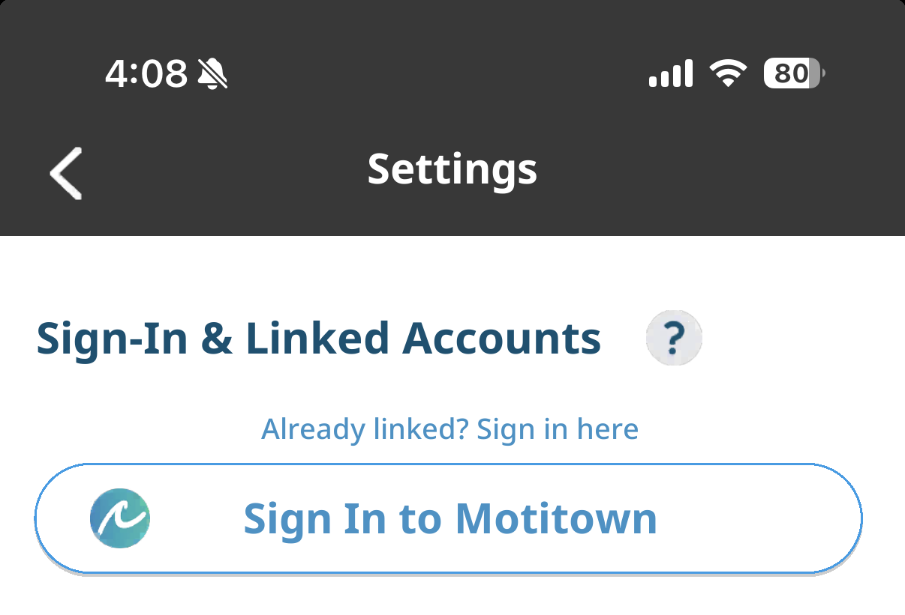

If Your Account Was Logged Out
We've confirmed that some players have been logged out of their accounts.
Even if you signed in from the start screen or created a new account, you can sign back in to your previous account from [Profile] > [Settings] > [Sign In to Motitown].

Sign In to Motitown">* You can find past announcements in the mailbox at the top right of Motitown.